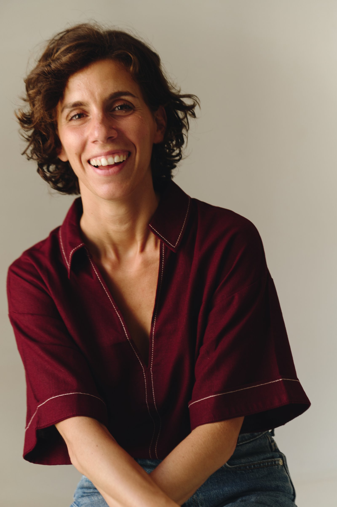
Dossier · 2026
Chorégraphe
Le mouvement naît de ceux qui le portent.
Italien · Français · Anglais
Spectacle vivant · Palais des Festivals, Cannes
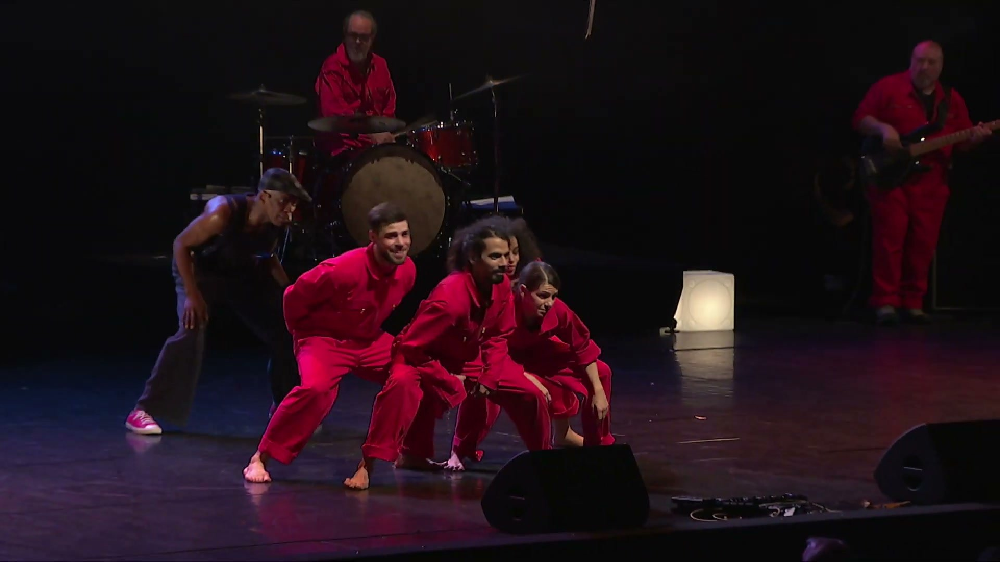
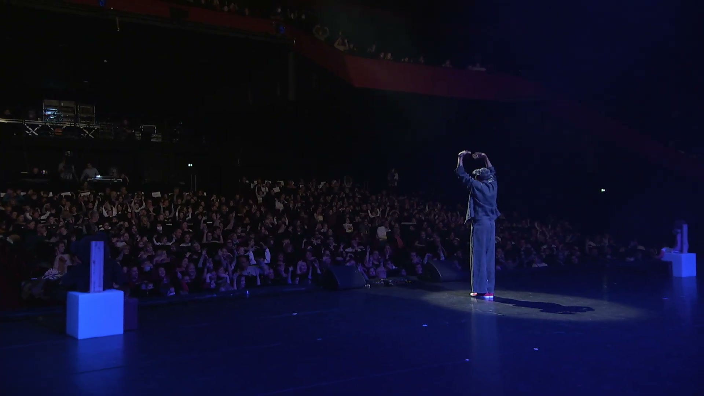
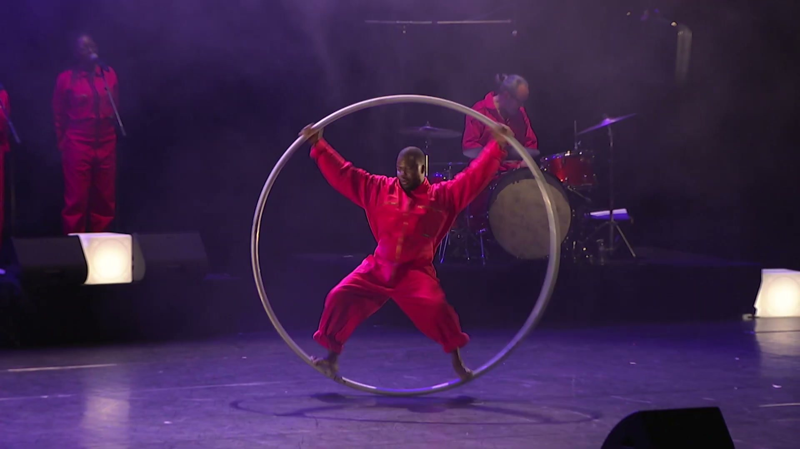
Chorégraphie
Éteignons les écrans
Un spectacle de Brice Kapel
Nagan Production · 2022
Spectacle musical pour petits et grands sur l’usage des écrans.
Chorégraphie Gladia Marchetti
Sur le plateau : 4 danseurs,
3 artistes de cirque, 1 chanteur,
2 choristes, 4 musiciens
Quatorze interprètes, un seul mouvement.
La chorégraphie ne s'arrête pas aux danseurs : artistes de cirque, chanteur, choristes et musiciens sont dirigés avec la même exigence, sur la grande scène du Palais des Festivals de Cannes.
Compagnie Wected · fondatrice
INequality
Spectacle vivant · Court-métrage
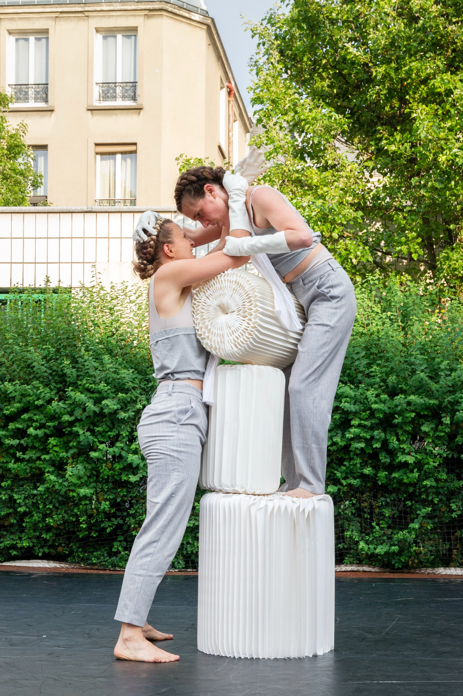
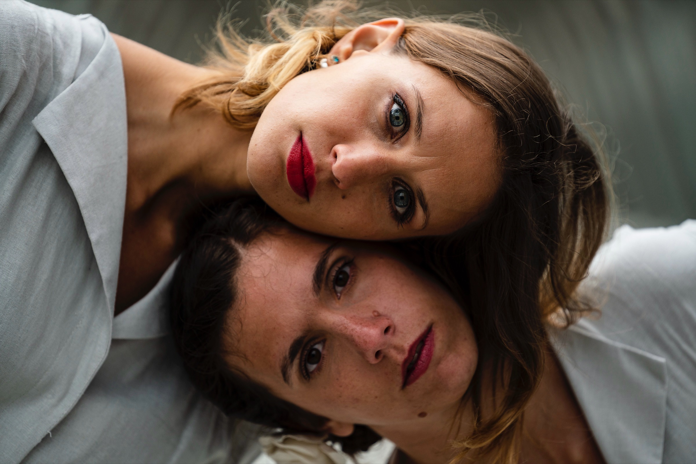
La pièce · Chorégraphe, autrice et interprète
Festival Onze Bouge, Paris · 2021
Amman Contemporary Dance Festival · Jordanie · 2023
ouverture du festival, avec l'Institut français de Jordanie
Conception et chorégraphie Gladia Marchetti
Interprètes Gladia Marchetti, Nina Chati, Ambre Nunes
Musique Arthur Balatier · Regard sociologique Pauline Vessely
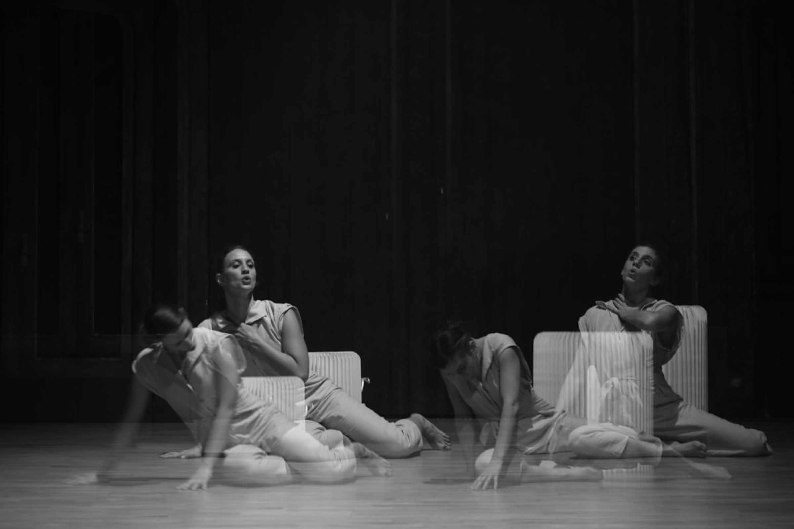
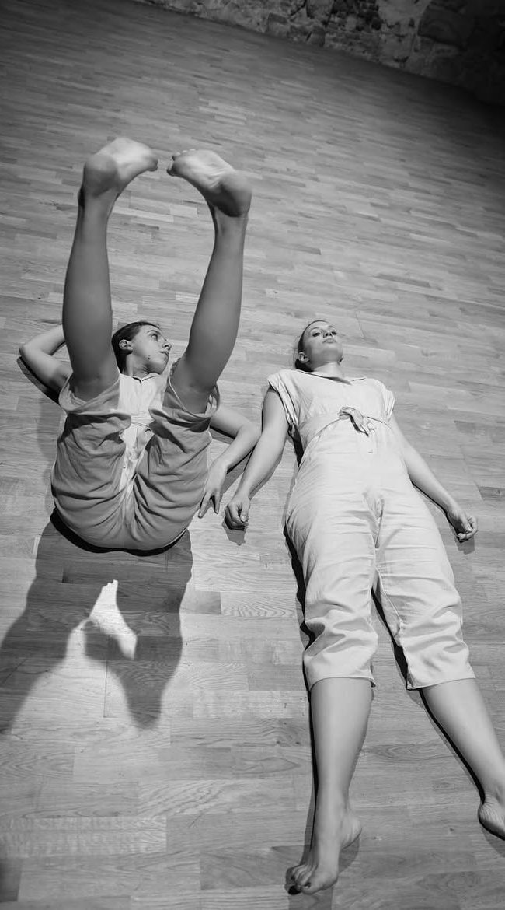
Le film · Chorégraphe, autrice et interprète
Court-métrage · 2021
Écriture, chorégraphie, montage Gladia Marchetti
Réalisation et image May Meng
Interprètes Nina Chati, Gladia Marchetti, Greta Quadri
Musique Arthur Balatier · Costumes Ishanee Patra
L'inégalité sociale, un sujet devenu banal mais qui conditionne profondément nos modes de vie et nos relations. Un travail sur le regard et l'interprétation, sur une gestuelle nourrie par l'émotion, entre la délicatesse de la musique classique et le poids du hip-hop.
Clip · Théâtre de la Renaissance, Paris
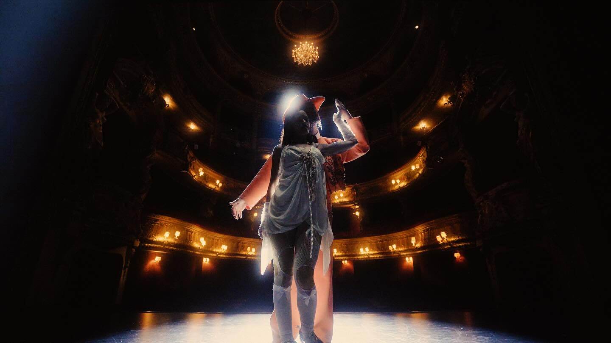
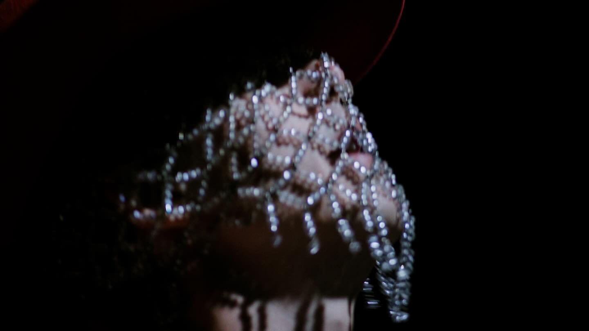
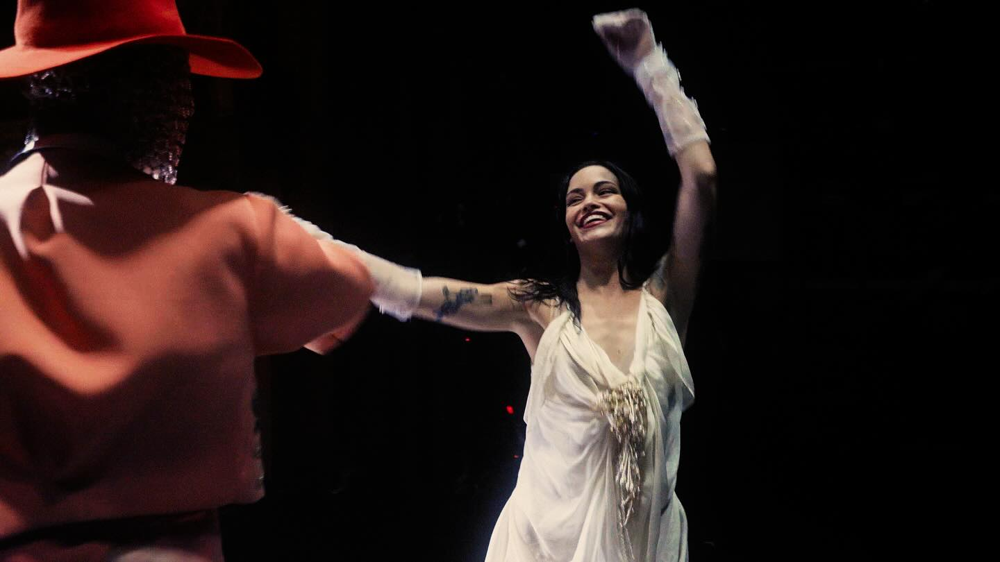
Chorégraphie
Comme Si
Clip officiel de Lucien Lumière
Maison Lumière · 2025
Chorégraphie Gladia Marchetti
Interprètes Sarah Okendo, Lucien Lumière
Réalisation Eli Chicheportiche
Direction artistique Roman Veiga
Direction de production Octave Donn
Lumière Iban Bergery
Musique Solal Roubine
Mixage et mastering Theo Chapira, Benjamin Savignoni
Un duo pour la caméra.
Construit autour du rappeur Lucien Lumière et de la comédienne Sarah Okendo, dans la salle vide du Théâtre de la Renaissance.
Méthode
Ce qui compte, c'est la vérité du geste.
Le mouvement d'abord, construit à partir des interprètes, jamais plaqué sur eux.
StylesClassique, contemporain, jazz, hip-hop.
Interprètes qu'elle a dirigésDanseurs, circassiens, comédiens, chanteurs, musiciens, choristes.
danse, cirque, voix, musique live
Scènes et festivalsPalais des Festivals de Cannes, Festival Onze Bouge à Paris, Amman Contemporary Dance Festival.
salle, plein air, caméra
Danseuse devenue chorégraphe, Gladia fonde son travail sur une conviction : le mouvement se construit avec les interprètes, pas sur le papier. Elle part du thème et des intentions du projet, et compose avec les corps présents.
Qu'ils soient danseurs ou non, elle s'appuie sur la personne : sur son bagage, sur ce que son corps sait faire, et c'est de là qu'elle l'emmène ailleurs. Le travail prend des formes différentes selon le projet : ateliers et consignes précises d'où naît le matériau, improvisations à partir d'une situation, ou une chorégraphie déjà écrite à transmettre. Portés, travail au contact, recherche gestuelle : une écriture sur mesure, qui change avec l'histoire, l'espace, le sol, les objets sur le plateau.
Sa place est entre l'idée et le plateau : elle écoute, puis traduit en mouvement, à même les corps, dans les délais d'une production. Sur scène, le mouvement ne concerne pas que les danseurs. Dans Éteignons les écrans, artistes de cirque, chanteur, choristes et musiciens passent tous par le mouvement, chacun avec ce qu'il sait faire.
C'est là, dans ce terrain partagé entre son écriture et l'univers de chaque interprète, qu'elle veut continuer à construire.
Parcours
Formée en Italie à l'Officina delle Arti (méthode Royal Academy of Dance), puis à Los Angeles et à Paris, du classique au hip-hop en passant par le contemporain et le jazz, Gladia est interprète pour plusieurs compagnies. En 2024, elle danse à la cérémonie d'ouverture des Jeux Paralympiques de Paris, et pour Hermès, Valentino et Victoria's Secret, en défilés comme en événements. Comédienne, formée à l'Actors Factory à Paris, elle signe aussi la direction du mouvement pour la caméra et accompagne des interprètes qui ne sont pas danseurs.
En 2019, Brice Kapel l'appelle à Boston comme assistante à la chorégraphie sur Coloricolex, la version américaine de son spectacle Coloricocolà. Elle fonde la Compagnie Wected et y crée INequality, joué à Paris et, en 2023, en ouverture de l'Amman Contemporary Dance Festival. En 2022, elle signe la chorégraphie d'Éteignons les écrans au Palais des Festivals de Cannes ; en 2025, celle du clip Comme Si de Lucien Lumière.
Formation
Officina delle ArtiItalie
EDGE Performing Arts CenterLos Angeles
Studio HarmonicParis
Actors FactoryParis · Jeu
Alexandra Reynolds et Tom AfiyanDirection du mouvement · Cinéma
Scène
Cérémonie d'ouverture des Jeux ParalympiquesChorégraphie Alexander Ekman
Direction artistique Thomas Jolly
Paris 2024
Compagnie Relief, Nagan Production, Compagnie NoMad, Compagnie CTBLInterprète
BonduelleBallet créé pour la marque · Rôle principal
Hermès, Valentino, Victoria's SecretDéfilés, événements, vidéos
Caméra
Les Rayons et les OmbresXavier Giannoli · Gaumont
Comédienne
Lucien Lumière · NormalClip officiel
Direction du mouvement
Sheryfa Luna · Si on parlaitClip officiel · Danseuse
Adolphe LafontFilm publicitaire
Danseuse
Ses mots
Mon travail commence toujours par une relation de confiance : c'est créer un cadre sécurisant, où la personne en face de moi peut se lâcher et sortir de sa zone de confort sans avoir peur de se tromper. C'est de là que tout part.
Transformons
ton idée
en spectacle.
Italien · Français · Anglais